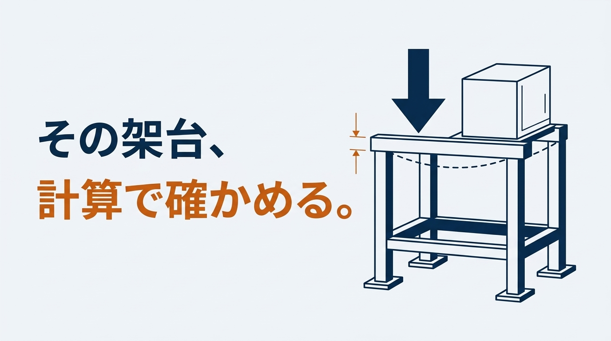
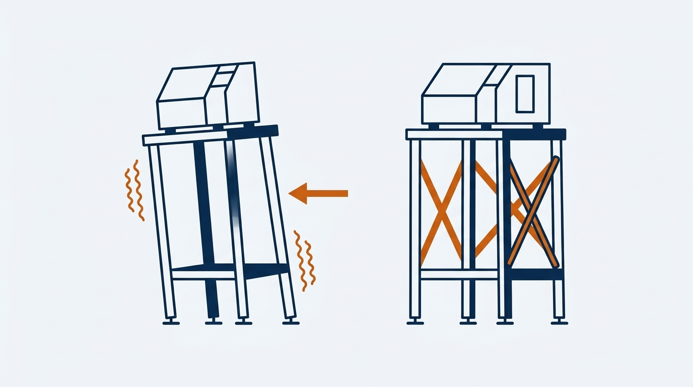

設備をのせる架台を自分で設計するとき、「この部材で持つのか」をどう確かめればよいのでしょうか。本記事では、架台の強度計算の方法を、500kgの設備をのせる架台の計算例で解説します。角パイプ、アングル、溝形鋼で結果がどう変わるかも比べます。
記事の後半には、ご自身の条件を入れて試せる計算ツールと、設備に合った架台を選ぶゲームがあります。数値はすべて説明用の例で、一般論にとどまる値には「要確認」と記しています。実際の設計では、使用する鋼材の資料とご自身の条件で確認してください。
計算例の適用範囲
- 本記事は、梁と柱を単純な形に置き換えて、基本の計算方法を説明するものです。実際の架台の安全性を保証するものではありません
- 実際の設計では、荷重のかかる位置、接合部、柱脚とアンカー、架台全体の横向きの剛性と安定、局部的な変形、ねじり、動く荷重や振動を、使用条件と適用する規準に応じて確認してください
この記事でわかること
- 架台の強度計算で確認する4つのことと、計算の手順
- 500kgの設備をのせる架台の計算例（梁・柱・水平力）
- 角パイプ・アングル・溝形鋼の違いと、見落としやすい「弱い軸」
- 自分の条件を入れて試せる、概算の計算ツール
- 設備に合った梁・柱と筋かいを選ぶゲーム
架台の強度計算で確認する4つのこと
架台の強度計算は、複雑に見えますが、確認することは4つに整理できます。
1. 梁の曲げ：折れたり、曲がったままになったりしないか
物をのせた梁には、曲げる力がかかります。梁に生じる応力が、材料の許容応力を超えないことを確かめます。
2. 梁のたわみ：下がりすぎないか
折れなくても、大きくたわめば、のせた設備が傾いたり、位置がずれたりします。強度が足りていても、たわみで使えないことがあるため、応力とは別に確かめます。
3. 柱の座屈：急に横へ曲がらないか
細長い柱は、材料がつぶれるよりずっと小さな力で、急に横へ曲がります。これを座屈（ざくつ）と呼びます。定規を両手で縦に押すと、つぶれる前に横へしなるのと同じ現象です。柱は「圧縮に耐えるか」ではなく、「座屈しないか」で決まることがほとんどです。
4. 接合部と床：力を最後まで伝えられるか
梁と柱が十分でも、溶接、ボルト、ベースプレート、アンカー、床のどこかが弱ければ、そこから壊れます。本記事では梁と柱を中心に扱い、接合部は別の記事で取り上げます。
この章のまとめ
- 確認するのは、梁の曲げ・梁のたわみ・柱の座屈・接合部と床の4つ
- 強度（応力）とたわみは、別々に確かめる
- 柱は、圧縮ではなく座屈で決まる
荷重の整理と、許容応力の決め方
のせる物の重さと、架台の自重
最初に、架台にかかる力を書き出します。のせる設備の質量に、治具やワーク、配管など、あとから増える分も含めます。設備の上に人が乗って作業する場合は、その重さも見込みます。質量（kg）に9.81を掛けると、力（N）になります。架台自身の重さも加えます。重さがどの梁に、どのようにかかるか（中央に集中するのか、全体に均等なのか）も、この段階で決めておきます。
水平力は「重さ×係数」で見込む
止まっている設備でも、地震や、人や台車がぶつかる力で、横向きの力がかかります。架台の計算では、重さに係数を掛けた力が横からかかるものとして扱うのが一般的です。係数の値は、設置場所や客先の指定、適用する基準によって変わります（要確認）。本記事の計算例では、仮に0.3とします。
安全率と許容応力は、基準を決めて明記する
許容応力は、材料の強さを安全率で割って決めます。決め方には、引張強さを基準にする方法と、降伏点を基準にする方法があり、どちらを採るかで合否が変わります。本記事の計算例では、鋼の引張強さ400MPaを安全率5で割った80MPaを使います（要確認）。社内基準や客先の指定がある場合は、そちらを優先し、採用した基準を計算書に書いておきます。
機械の構造物の規格の例として、クレーン構造規格（厚生労働省告示）では、許容応力を「降伏点÷1.5」と「引張強さ÷1.8」の小さい方とします。SS400（板厚16mm以下）では163MPaです。特集の「溶接の強度計算」は、この規格の考え方を使っています。本記事の80MPaは、くり返しの力も見込んで、さらに余裕をとった値です。計算ツールでは、どちらの基準でも試せます。
たわみの目安
たわみに一律の基準はありません。建築の規準では、一般の梁の参考値としてスパンの1/300以下が示されています（要確認）。本記事ではこれを目安に使いますが、機械の架台すべてに当てはまる値ではありません。精度や芯出しが必要な設備をのせる場合は、設備側が求める水平度や位置精度から逆算して、より小さい値を決めます。
この章のまとめ
- 力は「のせる物＋あとから増える分＋自重」で書き出す
- 水平力は、重さに係数を掛けて見込む
- 許容応力とたわみの目安は、基準を決めて計算書に明記する
架台の強度計算の方法｜使う式は3つ
手計算で使う式は、多くありません。梁の式、たわみの式、柱の式の3つです。
梁の式：曲げモーメントを断面係数で割る
曲げ応力 σ ＝ 曲げモーメント M ÷ 断面係数 Z
中央に集中する荷重 P の場合 M ＝ P×L÷4
全体に均等にかかる荷重 P（合計）の場合 M ＝ P×L÷8
L は梁のスパンです。同じ重さでも、中央に集中してかかる方が、曲げモーメントは2倍になります。のせ方が分からないときは、厳しい側の「中央に集中」で計算します。
たわみの式：断面二次モーメントが効く
中央に集中する荷重の場合 δ ＝ P×L³ ÷ (48×E×I)
全体に均等にかかる荷重の場合 δ ＝ 5×P×L³ ÷ (384×E×I)
E は材料のヤング率（鋼は205,000MPa）、I は断面二次モーメントです。たわみはスパンの3乗に比例するため、スパンを2倍にすると、たわみは8倍になります。
柱の式：細長比から、許容圧縮応力を求める
細長比 λ ＝ 座屈長さ Lk ÷ 断面二次半径 i
圧縮応力 σc ＝ 軸力 N ÷ 断面積 A ≦ 許容圧縮応力 fc
細長比が大きい（細長い）柱ほど、許容圧縮応力は小さくなります。許容圧縮応力は、鋼構造の設計規準にある式で、細長比から求めます（要確認）。座屈長さは、柱の両端の支え方で変わります。筋かいがなく、上端が横に動ける柱は、高さの2倍とするのが安全側です。
断面性能表の読み方
| 記号 | 名前 | 使う場面 |
|---|---|---|
| A | 断面積 | 柱の圧縮応力 |
| Z | 断面係数 | 梁の曲げ応力（強さ） |
| I | 断面二次モーメント | 梁のたわみ（かたさ） |
| i | 断面二次半径 | 柱の座屈 |
これらの値は、鋼材の規格やメーカーの断面性能表に載っています。表の単位はcmで書かれていることが多いので、計算に入れる前にmmへそろえます。同じ外形でも、板厚が変わると値は変わります。必ず、使う寸法と板厚の行を読みます。
この章のまとめ
- 梁の強さは断面係数 Z、たわみは断面二次モーメント I で決まる
- たわみはスパンの3乗に比例する
- 柱は、細長比から許容圧縮応力を求めて確かめる
架台の強度計算の例｜500kgの設備をのせる4本脚の架台
前提条件
| 項目 | 値 |
|---|---|
| のせる物 | 質量 500kg の設備。重さは 500×9.81 ＝ 4,905 N |
| 架台 | 4本脚。梁のスパン L＝1,000mm、柱の高さ h＝800mm。筋かいなし |
| 重さの受け方 | 2本の梁が半分ずつ受け、それぞれ中央に集中してかかるものとする |
| 部材 | 角パイプ □50×50×3.2（柱・梁とも）。A＝572.7mm²、I＝20.4×10⁴mm⁴、Z＝8.16×10³mm³、i＝18.9mm、4.50kg/m（断面性能表の値・要確認） |
| 許容応力 | 曲げ 80MPa（引張強さ400÷5）、ヤング率 E＝205,000MPa |
| 水平力 | 重さ×0.3 ＝ 1,472 N（係数は仮定） |
梁の計算
梁1本が受ける重さ P ＝ 4,905÷2 ＝ 2,453 N
曲げモーメント M ＝ P×L÷4 ＋ 自重分 ＝ 613,125 ＋ 5,518 ＝ 618,643 N·mm
曲げ応力 σ ＝ 618,643÷8,160 ＝ 75.8 MPa ＜ 80 MPa
たわみ δ ＝ 2,453×1,000³÷(48×205,000×204,000) ＋ 自重分 ＝ 1.24 mm（スパンの1/809）
応力は許容値の95％で、余裕はわずかです。たわみは、目安の1/300（3.3mm）に収まっています。
柱の計算
軸力 N ＝ 設備 4,905÷4 ＋ 梁の自重 4.50×9.81×1.0 ＋ 柱の自重 4.50×9.81×0.8
＝ 1,226 ＋ 44 ＋ 35 ＝ 1,306 N
座屈長さ Lk ＝ 800×2 ＝ 1,600 mm（筋かいなし）
細長比 λ ＝ 1,600÷18.9 ＝ 85
許容圧縮応力 fc ＝ 102.6 MPa（細長比85のとき）
圧縮応力 σc ＝ 1,306÷572.7 ＝ 2.3 MPa ＜ 102.6 MPa
水平力の計算
水平力は4本の柱が均等に受け、柱は床に固定された片持ち柱として計算します。均等に分かれることと、柱脚が固定として働くことは、どちらも仮定です。成り立つかどうかは、接合部と柱脚で決まります。
柱1本の水平力 Q ＝ 1,472÷4 ＝ 368 N
柱脚の曲げモーメント M ＝ 368×800 ＝ 294,300 N·mm
曲げ応力 σb ＝ 294,300÷8,160 ＝ 36.1 MPa
横ゆれ（梁の高さ） 368×800³÷(3×205,000×204,000) ＝ 1.5 mm
圧縮と曲げの組合せ 2.3÷102.6 ＋ 36.1÷80 ＝ 0.47 ＜ 1.0
判定
| 確認項目 | 結果 | 目安 |
|---|---|---|
| 梁の曲げ応力 | 75.8 MPa | 80 MPa 以下 |
| 梁のたわみ | 1.24 mm（1/809） | スパンの1/300 以下 |
| 柱の圧縮応力 | 2.3 MPa | 102.6 MPa 以下 |
| 圧縮と曲げの組合せ | 0.47 | 1.0 以下 |
この条件では、いちばん余裕が小さいのは梁の曲げでした。梁を □75×75×3.2 に上げると、応力は30.9MPa、たわみは0.34mmまで下がります。重さは1mあたり4.50kgから7.01kgに増えますが、応力は半分以下になります。逆に、スパンを1,000mmから1,500mmに広げると、同じ □50×50×3.2 では応力もたわみも大きく増えます。部材を決める前に、柱の位置を見直してスパンを短くできないかを考えるのも、有効な方法です。
この計算例で確認していないもの
ここまでの計算は、部材ごとの基本の確認です。架台全体として成り立つかは、次の項目を別に確かめる必要があります。
- 梁と柱の接合部（溶接、ボルト）と、想定した固定の度合い
- 柱脚、ベースプレート、アンカーボルト（柱脚の曲げモーメント 294,300 N·mm を受けられるか）
- 設備の重心の偏りと、脚の位置による荷重の片寄り
- 鋼管の壁や、溝形鋼の板の局部的な変形
- 架台全体の転倒とすべり
- 起動・停止や振動など、動く荷重
この章のまとめ
- 500kgを □50×50×3.2 の梁（スパン1,000mm）で受けると、応力は許容値の95％
- 柱は圧縮だけなら余裕が大きいが、水平力による曲げが加わる
- いちばん余裕の小さい項目を見つけて、そこから部材を見直す
角パイプ・アングル・溝形鋼で比べる｜同じ重さでも強さは違う
同じ計算例で、部材だけを変えて比べます。1mあたりの重さが近い3種類です。
| 部材 | 重さ | 梁の応力 | 梁のたわみ | 柱の細長比 |
|---|---|---|---|---|
| 角パイプ □50×50×3.2 | 4.50 kg/m | 75.8 MPa | 1.24 mm | 85 |
| アングル L-50×50×6 | 4.43 kg/m | 174.2 MPa | 2.00 mm | 166 |
| 溝形鋼 [-75×40（強い向き） | 6.92 kg/m | 30.9 MPa | 0.34 mm | 137 |
| 溝形鋼 [-75×40（弱い向き） | 6.92 kg/m | 139.1 MPa | 2.08 mm | 137 |
重さがほぼ同じ角パイプとアングルで、梁の応力は2倍以上違います。アングルは許容値の80MPaを大きく超えました。溝形鋼は、向きを変えるだけで応力が4倍以上変わります。
アングルは、斜めの軸がいちばん弱い
断面性能表のアングルの欄には、辺に平行な軸（x軸・y軸）の値と、斜めの軸（u軸・v軸）の値が載っています。柱の座屈は、いちばん弱い v軸の値で計算します。なお、アングルは開いた断面のため、取り付け方や力のかかる位置によっては、中心からずれた圧縮（偏心）や、ねじりを伴う座屈も問題になります。v軸の確認は、最低限の確認と考えてください。
ワンポイント
- L-50×50×6 の柱（座屈長さ1,600mm）を x軸の値で計算すると、細長比は107、許容圧縮応力は79.1MPa
- 正しく v軸の値で計算すると、細長比は166、許容圧縮応力は33.8MPa
- x軸の値を使うと、柱の強さを2倍以上に見積もってしまう
また、アングルの梁は、上から押すと、まっすぐ下ではなく斜めにたわみ、ねじれも生じます。上の表の応力は、辺に平行な軸まわりの単純な曲げとして求めた値で、実際はこれより厳しくなります。アングルを梁に使うときは、余裕を大きく取ります。
溝形鋼は、向きで強さが大きく変わる
溝形鋼は、背の高い向きに力を受けると強く、寝かせると弱くなります。梁には、必ず立てた向きで使います。
ワンポイント
- 柱に使うときは、向きを選べない。座屈は弱い向きで決まる
- 溝形鋼は開いた断面で、ねじれの中心（せん断中心）が断面の外側にある。力の作用する線がそこからずれると、たわむと同時にねじれる
- 2本を背中合わせにして使うと、ねじれを抑えやすい
迷ったら、角パイプから検討する
角パイプは、どの向きにも同じ強さを持ち、ねじれにも強い「閉じた断面」です。向きの間違いが起きず、座屈の計算も単純です。アングルや溝形鋼は、軽くて加工しやすい反面、向きと弱い軸を理解して使う必要があります。
この章のまとめ
- 同じ重さでも、角パイプとアングルで梁の応力は2倍以上違う
- アングルの柱は斜めの軸、溝形鋼の柱は弱い向きで座屈を計算する
- 迷ったら、向きの間違いが起きない角パイプから検討する
自分の条件で試す｜架台の強度計算ツール（概算）
ここまでの計算を、ご自身の条件に置き換えて試せます。数値や部材を変えると、図と結果がその場で変わります。初期値は、本記事の計算例と同じです。
4本脚の架台の概算
本記事と同じ単純化（のせる物の重さは2本の梁が半分ずつ受ける、梁は両端単純支持、筋かいがない場合の柱は上端が自由な片持ち柱）による概算です。溶接部、ボルト、ベースプレート、アンカー、床は計算に含みません。結果は設計の可否を保証するものではありません。実際の設計では、使用する鋼材の資料と専門家の確認にもとづいて判断してください。
紺の矢印は重さ、オレンジの矢印は水平力です。右は梁を切った断面で、点線のまわりに曲がります。
のせる物と寸法
重さのかかり方
部材の種類（柱・梁とも同じ部材）
サイズ
筋かい
許容応力の決め方
梁
| 梁1本が受ける重さ | N |
|---|---|
| 梁の曲げ応力 | MPa |
| 梁のたわみ | mm |
柱
| 細長比（いちばん弱い軸） | |
|---|---|
| 許容圧縮応力 | MPa |
| 柱の圧縮応力 | MPa |
| 水平力による柱の曲げ応力 | MPa |
| 水平力による横ゆれ（梁の高さ） | mm |
| 圧縮と曲げの組合せ（1.0以下が目安） |
実際の設備での計算・選定の確認は、オンラインでお引き受けします（全国対応）。料金の目安相談する ›
やってみよう｜設備に合った架台を選ぶゲーム
クレーンで設備を架台に載せ、地震の揺れに耐えられるかを試します。設備の重さは、毎回変わります。選べるのは、梁（横）と柱（縦）の角パイプのサイズと、筋かいの有無です。細すぎると壊れ、太すぎると据え付けと費用が大変になります。
架台の部材選びゲーム
今回の設備の重さ： kg
梁（横）の角パイプ
柱（縦）の角パイプ
筋かい
判定は、本記事の計算ツールと同じ式（スパン1,000mm、柱の高さ800mm、設備の重さは2本の梁の中央に半分ずつ、地震の横の力は重さの0.3倍、許容応力80MPa）で求めた、梁と柱の応力の割合で決めています。ゲームなので、110％までは成功としています。壊れないいちばん細いサイズとその1つ上を「ちょうどよい」とし、それより2つ以上太いと「大きすぎ」としています。壊れ方の動きは、分かりやすくするための演出です。
架台の強度計算をエクセルで行うときの組み方
同じ形の架台をくり返し設計する場合は、エクセルに計算をまとめておくと便利です。式は本記事のとおりなので、特別な機能は要りません。大切なのは、あとから見た人が、前提と根拠を追える形にしておくことです。
シートを「入力・断面性能・計算・判定」に分ける
- 入力：のせる物の質量、スパン、柱の高さ、水平力の係数、許容応力。色を付けて、入力する欄だと分かるようにする
- 断面性能：使う部材の A・Z・I・i を、規格やメーカーの表から書き写す。出典と単位も書いておく
- 計算：1行に1つの式を書き、横に式の意味を日本語で添える
- 判定：応力・たわみ・細長比・組合せを、目安の値と並べて表示する
単位をそろえ、最初に検算する
計算の間違いでいちばん多いのは、単位の取り違えです。断面性能表の cm⁴ や cm³ を、mm⁴ や mm³ に直してから使います（1cm⁴＝10,000mm⁴、1cm³＝1,000mm³）。シートを作ったら、本記事の計算例と同じ条件を入れて、同じ結果（梁の応力75.8MPa、たわみ1.24mm）になるかを確かめます。上の計算ツールの結果と見比べる方法も使えます。
この章のまとめ
- 入力・断面性能・計算・判定に分け、出典と単位を書いておく
- cm と mm の取り違えに注意する
- 作ったシートは、計算例と同じ条件で検算する
架台の強度計算でよくある失敗

梁だけを計算して、柱と横向きの力を見ていない
重さを受ける梁は計算しても、柱の座屈と水平力を確かめていない例は少なくありません。計算例でも、柱の応力の大半は、重さではなく水平力によるものでした。
アングルの座屈を、辺に平行な軸の値で計算する
前の章のとおり、柱の強さを2倍以上に見積もってしまいます。断面性能表で、いちばん小さい断面二次半径を使います。
応力だけを見て、たわみを確かめていない
たわみはスパンの3乗に比例します。スパンが長い架台では、応力に余裕があっても、たわみが先に目安を超えます。
筋かいを入れず、接合部と床を確かめていない
筋かいのない架台は、横向きの力を柱の曲げだけで受けるため、揺れやすく、柱脚に大きな力がかかります。適切に配置して接合した筋かいは、架台の横への動きを抑え、水平力を床へ伝えます。座屈長さを短くできるかどうかは、筋かいが拘束する向きによって変わるため、向きごとに確かめます。あわせて、溶接部、ベースプレート、アンカー、床の確認も欠かせません。
この章のまとめ
- 柱の座屈と水平力まで計算する
- 座屈は、いちばん弱い軸の値で計算する
- たわみを確かめ、筋かい・接合部・床まで見る
動く設備をのせる架台は、別の計算が必要
ここまでは、止まっている設備をのせる架台の計算でした。ロボットのように、質量のある部分が動いて止まる設備をのせる場合は、止まるときの慣性力とモーメントが加わります。考え方と計算例は、ロボット架台の強度計算の方法｜非常停止時の慣性力の扱い方と計算例で解説しています。客先に提出する強度計算書に残す項目も、同じ記事にまとめています。
まとめ
架台の強度計算で確認するのは、梁の曲げ、梁のたわみ、柱の座屈、そして接合部と床です。使う式は3つで、必要な値は断面性能表に載っています。
そのうえで結果を左右するのは、部材の「向き」と「いちばん弱い軸」を正しく選べているかです。同じ重さの部材でも、形と向きで強さは数倍変わります。まずは計算ツールで、ご自身の条件を試してみてください。
参考
・日本鉄鋼連盟「JIS G 3192 熱間圧延形鋼の形状、寸法、質量及びその許容差」関連資料（山形鋼・溝形鋼の断面性能）
・一般構造用角形鋼管（JIS G 3466）の断面性能表（鋼管メーカー公表値）
・許容圧縮応力の式：日本建築学会「鋼構造許容応力度設計規準」（基準強度 F＝235MPa として計算）